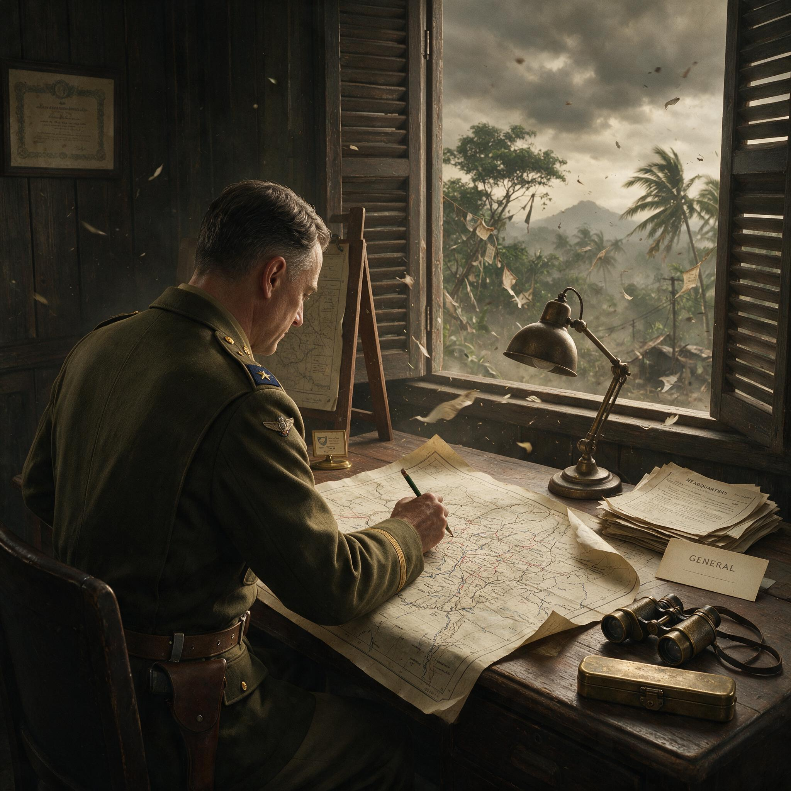

第 12 章
败退的分水岭
腊戍失陷的消息传到缅北时，第五军军长杜聿明正在曼德勒以北约八十公里处的一座小镇上，对着摊开的地图反复计算各师的剩余弹药基数。通讯兵递上来的电报只有寥寥数行字，但每一个字都在改写地图

史迪威在眉苗指挥部地图前
AI 生成插图，非史实影像。
上的所有箭头。滇缅公路断了。后方基点消失了。从这一刻起，十余万中国军队在缅甸境内的所有作战行动，都不再依托任何一条可以输送补给、接运伤员的陆上通道。他们脚下踩着的每一寸土地，都在从“战线”变成“绝境”。
电报是五月三日下午收到的。杜聿明没有立即向各师转发。他把电文压在指关节下，沉默了片刻，然后问身边的参谋：腊戍到畹町还有多远。参谋报出了一个数字。杜聿明点了点头，没有再问第二个问题。
他清楚，日军第五十六师团在攻占腊戍之后不会停下来——他们会沿着滇缅公路向北推进，直扑中国国门。而此刻，第五军主力三个师连同军直属部队数万人，仍散布在曼德勒至密支那之间的狭长地带上，面朝南方，背靠的却是一条已经不复存在的公路。这不是一个战术问题。这是一个生存问题。
在接下来七十二小时内，同样的信息以不同的速度和不同的形式，抵达了散布在缅北各处的指挥所。英缅军司令部在五月二日夜间就已经接到了腊戍方向的最新情报，亚历山大将军的参谋班子几乎没有任何迟疑，立即加速了英军主力沿钦敦江向印度边境撤退的计划。对于英军而言，腊戍的陷落不过是确认了一个早已做出的判断：缅甸已经无法守住，眼下唯一有价值的军事目标，是确保英印军主力完整地退入印度，守住次大陆的东大门。这个判断在伦敦、在德里、在亚历山大的野战司令部里，没有实质性的分歧。
但对于中国远征军而言，腊戍的陷落意味着一个完全不同的东西。英军退往印度，是退回到自己的殖民帝国版图之内。中国军队往哪里退？往北是国境线，但国境线那一边是云南的群山，中间横亘着一条没有任何现代化道路的野人山脉。往西是印度，但那意味着进入英军的防区，把自己的后勤乃至指挥权完全交到盟友手中。留在缅北继续抵抗，则意味着在没有后方、没有补给、没有友军协同的情况下，独自面对日军多个师团的围剿。
这三个选项中没有一个是好的。但每一个指挥官都必须从中选择一个。史迪威的选择来得最早，也最具有象征意义。五月五日，这位美军中将在曼德勒以北的指挥部里召集了最后一次中美联合参谋会议。会议桌上摊开的已经不是作战地图，而是撤退路线图。
史迪威在会上提出了一个方案：中国远征军主力应向西撤退，进入印度，在那里接受重新装备和整训，为将来的反攻保存实力。这个方案的军事逻辑是清晰的——印度有港口、有铁路、有美英两国的后勤体系，部队进入印度后可以迅速恢复战斗力。
但它的政治含义同样清晰：进入印度意味着中国军队将彻底脱离中国战区的指挥链条，成为盟军体系中一支被重新编组的部队。
罗卓英在会议上没有明确表态。杜聿明通过联络官传达了自己的意见：第五军主力应向北撤退，翻越野人山返回云南。他的理由也很明确——中国军队的建制归属不能断裂，部队必须回到自己的国土上，回到自己的战区指挥体系内。至于野人山意味着什么，在五月五日那个时间点上，还没有任何人能够准确地描述出来。
会议没有达成一致。事实上，它甚至没有形成一个有效的决议。散会之后，史迪威带着一支百余人的队伍——包括他的参谋人员、警卫分队和少数美军技术军官——开始了徒步前往印度的旅程。这个决定后来被西方战史书写为史迪威个人坚韧品质的象征：一位年近六旬的将军，在丛林中徒步行军数百公里，最终抵达印度。但这个叙事忽略了一个更重要的结构性问题：当盟军中国战区参谋长选择以徒步方式穿越丛林前往印度时，他实际上已经放弃了对他名义上指挥的中国远征军主力进行有效指挥的可能。从五月五日那一刻起，中国远征军各部的撤退行动，就不再受到任何统一的盟军指挥体系的约束。
史迪威的队伍在缅甸农民的指引下，沿着丛林小路一路向西。他们没有遭遇日军主力，但经历了极端恶劣的自然条件。口粮在行军第三天就开始短缺，队伍不得不依靠沿途村庄中获得的少量稻米和香蕉维持体力。
五月二十日，史迪威抵达印度英帕尔。在那里，他对着聚集起来的记者说了一句后来被广泛引用的话：“我们挨了一顿狠揍。
但我们还会回来。”这句话的传播力很强，但它掩盖了一个事实：史迪威带出来的，只是他自己和一百多人。十余万中国军队仍然散落在缅北的丛林、河谷和山道上，他们中的绝大多数人，没有机会说出“我们还会回来”这句话。
与史迪威几乎同时出发的，是英缅军的主力部队。英军的撤退是有组织、有预案的。亚历山大在四月中旬就已经下令勘定从曼德勒向西通往印度边境的多条路线，沿途设置了物资囤积点和收容站。英军部队在撤退过程中虽然也遭受了损失——疾病、疲劳和日军的侧翼袭扰造成了相当数量的减员——但整体上保住了建制，大部分重装备得以通过钦敦江渡口运回印度。
五月下旬，当最后一批英军后卫部队渡过钦敦江时，缅甸战役对于英国而言实际上已经结束了。伦敦的战争内阁迅速将注意力转向了保卫印度东部边境和镇压印度国内民族主义运动这两件事上，缅甸本身则被暂时放进了战略地图上的“待收复”一栏。
但中国军队没有这样的选项。杜聿明在五月七日下达了第五军主力向北撤退的命令。
这个命令的措辞是明确的：各师沿曼德勒至密支那的铁路线向北运动，在密支那集结后，翻越野人山进入云南。命令中没有提及印度。在杜聿明的判断里，将部队完整地带回国内，是他的首要责任。建制不能散，归属不能断——这两条原则压倒了其他一切考量。
第五军下辖的三个师——第二〇〇师、新编第二十二师和第九十六师——在接到命令时处于不同的位置，面临着不同的敌情。第二〇〇师在曼德勒以南的阻击战中已经与日军缠斗多日，伤亡惨重，弹药所剩无几。新编第二十二师的位置相对靠北，建制较为完整。第九十六师则在东线作战中被打散了一部分，正在收拢部队。
杜聿明的命令要求这三个师在运动战中向北集结，这本身就是一项在和平时期都难以完成的复杂机动，更何况是在雨季将至、道路泥泞、日军多路追击的条件下。最先出发的部队在五月八日清晨开始向北移动。士兵们背着自己仅剩的装备——一支步枪、三四十发子弹、一条薄毯、一个搪瓷碗和一个水壶——踏上了通往密支那的铁路线。
这条铁路在战前是缅甸北部最重要的交通干线，但此刻已经遭到了日军的反复空袭，多处路段被炸毁，桥梁被破坏，机车和车厢大多被遗弃或损毁。部队无法乘车，只能沿铁路徒步行军。铁轨在五月的烈日下反射着刺眼的白光，枕木之间的碎石硌着士兵们早已磨破的脚板。没有人说话。队伍拉得很长，前后绵延数公里，像一条精疲力竭的灰色河流，缓慢地向北流淌。
口粮问题在行军的第三天就变得严峻起来。第五军的后勤体系在腊戍失陷之后已经彻底断裂——原本储存在腊戍、畹町和芒市的后方仓库，连同仓库里的粮食、弹药、药品和被服，全部落入了日军手中，或者被撤退部队自行焚毁。各师携带的随军口粮仅够维持五到七天，而这个估算是按照和平时期的标准行军消耗计算的。实际上，在缅甸五月的高温高湿环境中，士兵的体力消耗远远超过正常值。到了行军的第五天，大部分连队的口粮已经减半供应。到了第七天，减半变成了三分之一。
有些连队开始宰杀随军的驮马和骡子，但这只是杯水车薪——一匹马的肉分到一个两百人的连队里，每个人只能分到一小块。
比饥饿更早到来的是疾病。缅甸北部的丛林在五月进入雨季前的高温期，蚊虫密度达到了一年中的峰值。疟疾的潜伏期只有七到十四天，而第五军的士兵们在缅甸已经作战了数月，体内的疟原虫正在等待一个体力崩溃的时机。行军开始后的第二周，各师的非战斗减员数字开始急剧攀升。
最初是零星士兵在行军途中突然高烧，倒在路边。接着是整班、整排的人同时发病。部队没有足够的奎宁——这种抗疟药物在当时的中国军队中是奢侈品，只有少数军官和医务兵能够分配到极少的剂量。普通士兵对待疟疾的唯一办法是硬扛。扛过去的，继续走。扛不过去的，被留在路边的临时收容点里，等待后续部队收容——但后续部队自己也处于同样的困境中，收容能力几乎为零。
五月十二日，杜聿明的指挥部抵达了密支那以南约四十公里处。在这里，他收到了来自重庆的最新指令。
蒋介石的电报措辞严厉，要求第五军不得进入印度，必须翻越野人山返回云南。电报中强调，中国军队的建制不能受制于外人，部队必须回到自己的国土上。这个指令与杜聿明本人的判断完全一致，但它也意味着，北返路线上最大的障碍——野人山——已经从选项变成了命令。
野人山不是一座山。它是一整片横亘在中缅边境上的原始山林区域，南北纵深超过两百公里，东西宽度近百公里。山中没有公路，没有定居点，没有可以供大部队通行的道路。有的只是密不透风的原始森林、深达数十米的沟壑、湍急的山涧和每年五月到十月之间几乎不间断的降雨。当地的克钦族猎人在旱季可以沿着山脊小路穿越这片区域，但他们从不在雨季尝试——那是自杀。
而第五军抵达密支那的时间，恰好是五月下旬。雨季的第一场大雨，已经在酝酿之中。
在第五军主力北上的同时，新编第三十八师师长孙立人正在做出一个截然不同的决定。新三十八师在仁安羌解围战之后，一直作为后卫部队在曼德勒以南掩护英军和中国远征军主力的撤退。
五月上旬，当杜聿明的北撤命令传达到孙立人手中时，新三十八师的部队仍然保持着相对完整的建制，弹药和口粮的储备也优于第五军的其他师。孙立人对着地图分析了北返路线的地形和距离，又评估了日军在东线的推进速度，得出了一个结论：翻越野人山在雨季即将到来的条件下，将导致部队遭受不必要的巨大损失。
他决定不执行北返命令，而是率领新三十八师向西，跟随英军退入印度。这个决定在当时和后来都引发了巨大的争议。杜聿明在回忆中对此表示了强烈的不满，认为孙立人违抗军令，破坏了远征军的统一指挥。蒋介石在重庆得知消息后也极为震怒。
但从军事结果来看，新三十八师是缅甸战役第一阶段中唯一一支成建制、保有战斗力地撤出战区的中国部队。当第五军主力在野人山中遭受灭顶之灾时，新三十八师的七千余名官兵已经抵达印度，建制完整，装备大部在身，士气虽然受挫但尚未崩溃。这七千人，连同随后陆续撤至印度的新编第二十二师残部和零星收容的散兵，构成了后来驻印军最初的骨架。
五月十六日，新三十八师开始向西运动。他们的路线与英军撤退路线大致平行，沿钦敦江支流向印度曼尼普尔方向前进。沿途的困难同样巨大——道路被雨水冲毁，桥梁需要工兵临时架设，日军的追击部队不时出现在侧翼。但新三十八师有组织地应对了这些困难。孙立人将部队分成多个梯队，交替掩护撤退，后卫部队在关键隘口设置阻击阵地，为主力争取通过时间。
口粮虽然也在减少，但部队在沿途村庄中采购或征用了部分粮食——新三十八师手里还有印度卢比和缅甸卢比，这些货币在边境地区仍然有用。到了五月下旬，新三十八师的大部分部队已经越过了钦敦江，进入了印度境内。
在印度边境的第一个英军哨所，一名英军军官清点了新三十八师的先头部队人数，然后在登记簿上写下了一个数字。他抬起头，看着眼前这些衣衫褴褛但队列整齐的中国士兵，沉默了几秒钟，然后说了一句话。这句话没有被记录下来，但它的意思大致是：你们是第一批完整撤出来的中国部队。孙立人的选择保全了新三十八师，但它也付出了政治上的代价。
进入印度之后，新三十八师被编入了英军的后勤和指挥体系，随后又被划归史迪威主持的驻印军序列。在兰姆伽整训期间，这支部队将接受全套美式装备和美式训练，战斗力将得到质的提升。但它的指挥权也从中国战区体系中部分地剥离了出去。史迪威对驻印军拥有实际上的控制权，蒋介石的遥控指令必须经过美方指挥系统的过滤才能下达到师一级。这种指挥权的让渡，在1942年5月孙立人决定向西转进的那一刻，就已经被写进了这支部队的命运里。
而在缅北，第五军主力的命运正在沿着另一条轨迹展开。五月十八日，杜聿明的指挥部进入密支那。这座城市是缅北最大的居民点，也是铁路线的北端终点。按照原定计划，第五军各师应在此集结，补充给养，然后开始翻越野人山。
但密支那的情况比预想的要糟糕得多。城内的粮仓在日军空袭中被焚毁了一部分，剩余的存粮远不足以供应数万大军。更致命的是，五月二十日，情报证实日军第五十六师团的一部已经从东面逼近密支那，距离城市不到两天的路程。
杜聿明不得不做出一个更残酷的决定：放弃在密支那集结休整的计划，立即分路进入野人山。第二〇〇师和新编第二十二师沿不同的路线向北进入山林，第九十六师则向西北方向绕行，试图从更偏西的山口翻越国境线。三路部队在密支那以北的丛林中分道扬镳，彼此之间很快失去了联系。
从这一刻起，第五军作为一个统一的作战单位已经不复存在。它分裂成了几支各自求生的队伍，在野人山的无边密林中艰难向北爬行。野人山的雨季在五月最后一周如期而至。大雨不是从天上落下来的——它是从四面八方涌过来的。雨水砸在树冠上，顺着树干流下来，灌进士兵们的衣领和袖口。山路变成了泥浆的河流，每一步都陷到小腿。
驮马在泥泞中挣扎，摔倒后就再也站不起来。士兵们把马背上的物资卸下来，分给每一个人背负，然后继续往前走。没有人知道前面还有多远。没有人知道明天还有没有吃的。唯一确定的是必须向北走——向北，就是回家的方向。饥饿在野人山中变成了一种缓慢而精确的屠杀。口粮在进山后的第三天就用完了。
士兵们开始吃一切能找到的东西：野果、树皮、草根、昆虫。有些野果是有毒的，吃了之后上吐下泻，在缺医少药的情况下，腹泻就意味着脱水，脱水就意味着死亡。有些士兵误食了有毒的蘑菇，在幻觉中跑进密林深处，再也没有回来。更多的人死于纯粹的饥饿——他们的身体在数周的行军和战斗中已经消耗殆尽，野人山没有给他们任何补充的机会。一个接一个地，他们倒在泥泞的山路上，倒在树根盘结的陡坡下，倒在湍急的溪流边。活着的人从他们身边走过，没有人有力气停下来掩埋。
疟疾和痢疾在潮湿的丛林中以惊人的速度传播。一个连队早晨出发时有八十个人，到了晚上宿营时只剩下五十个。失踪的人有些是掉队了，有些是死了，有些是走进了岔路，再也没有找到队伍。
连排长们用嘶哑的嗓音在密林中呼喊，回应他们的只有雨声和远处不知名的野兽的嗥叫。部队的建制在野人山中以一种无声的方式瓦解了——不是溃散，不是投降，而是被这片山林一口一口地吞噬。杜聿明本人也在野人山中。
他和其他士兵一样，在泥泞中跋涉，在雨中宿营，在饥饿中煎熬。他的指挥部已经缩减到了几十个人，电台在进山后不久就失去了电力，与外界的所有联系都中断了。在重庆，蒋介石的军事委员会在数周内完全不知道第五军主力的下落。在印度，史迪威通过各种渠道试图获取中国军队的消息，但同样一无所获。
十余万中国军人，就这样在缅北的丛林和山峦之间消失了——不是从地球上消失，而是从指挥体系、从通讯网络、从战略地图上消失了。直到六月十四日，第九十六师的一支先头部队才在缅甸最北端的葡萄附近，与远征军长官部重新建立了联系。他们用最后一点电力发出了电报。美军飞机随后向葡萄空投了食物、药品和部分物资。这是第五军主力自五月中旬进入野人山以来，第一次接收到来自外界的补给。
但对于那些已经倒在野人山深处的士兵们来说，这些空投来得太晚了。第二〇〇师和新编第二十二师的部队在六月下旬至七月上旬陆续翻越了野人山，抵达了云南境内的腾冲、保山一带。
出发时的数万官兵，活着走出野人山的不足一半。建制残破不堪，重装备全部丢失，士兵们瘦得脱了形，许多人赤着脚，身上的军服已经烂成了布条。他们从缅甸的战场上带回来的唯一完整的东西，是建制归属——第五军的番号没有消失，它回到了自己的国土上，回到了中国战区的指挥体系内。
但这个归属的代价，是野人山中数万具无人掩埋的白骨。而那些既没有进入印度、也没有翻越野人山的部队，则在缅北陷入了另一种命运。第六军的部分部队在撤退中被打散，残部在缅北的丛林和山地中分散游击。有些部队与当地克钦族武装建立了联系，在日军占领区继续抵抗。
有些部队则逐渐瓦解，士兵们脱下军装，融入当地社会，成为缅甸华人社区的一部分。这些滞留缅北的中国军人，将在随后两年多的时间里，继续以零散的方式与日军作战，但他们的战斗不再被纳入任何正式的战史记录。他们是中国远征军中被遗忘的一支——没有人命令他们留下，也没有人命令他们撤退。
他们只是在那条撤退路线的分岔口上，没有走上任何一条通往“归途”的路。四条撤退路线，在1942年五六月间，将缅甸战役第一阶段的结局钉死在了一个结构性的断裂点上。英军退往印度，保住了建制，但他们从此将缅甸视为次要战场，反攻的意愿和能力都受到国内政治和全球战略的制约。新三十八师退往印度，保住了战斗力，成为中国驻印军的核心骨架，但付出了指挥权让渡的政治代价。
第五军主力翻越野人山返回云南，保住了建制归属，但付出了惨重的人员损失，这支部队在短期内不再具备机动作战能力。滞留缅北的散兵则彻底脱离了正规军的体系，他们的抵抗虽然持续，却不被任何一方的战史完整记录。撤退不是战争的暂停。它是另一种战争形态的开始。在野人山的泥泞中，在通往印度的山路上，在缅北丛林里那些静默的游击战中，1942年5月到七月的这场大撤退，预先写好了中国远征军在随后两年里的全部命运。
退往印度的部队将在兰姆伽被重新整训，装备美式武器，学习美式战术，然后从印度出发，沿着胡康河谷和孟拱河谷一路打回缅甸。翻越野人山的部队将在云南重新集结，接受美式装备的补充，然后从滇西出发，强渡怒江，仰攻松山和腾冲。两支力量最终将在芒友会师，完成对缅北日军的合围。
但在1942年5月那个分岔的路口上，没有人能看到这个结局。他们能看到的，只是脚下的泥、身上的雨、腹中的饥饿，和一个越来越模糊的、叫做“归途”的词。这个词在曼德勒失陷之前，指的是一条具体的公路——滇缅公路，从缅甸的腊戍一路通到云南的昆明，卡车可以运送弹药和粮食，伤员可以被送往后方医院。在腊戍陷落之后，这个词变成了一条需要翻越的国境线——翻过去就是中国，翻不过去就是异乡。而在野人山的雨季到来之后，这个词的意义再次发生了变化。对于那些倒在泥泞中的士兵们来说，“归途”不再是一个地理概念。它是一个永远无法抵达的终点。
四个月后，当雨季结束、旱季重新降临缅北时，野人山中的一部分路段被后续部队重新打通。经过那些路段的士兵们看到了他们此生无法忘记的景象：山路两侧，白骨散落在树根和落叶之间，有些还保持着倒下时的姿势，有些已经被雨水和野兽冲散。军服已经腐烂，武器已经锈蚀，只有骨骼在旱季的阳光下泛着暗淡的白光。没有人知道这些骨骼的主人叫什么名字，属于哪个连队。他们被统一记入了“失踪”名单，然后被遗忘。
但遗忘不是结局的全部。在印度兰姆伽的训练营里，新三十八师的士兵们正在学习使用汤普森冲锋枪和巴祖卡火箭筒。在云南保山的收容站里，翻越野人山幸存的老兵们正在重新编组，等待美式装备的补充。在缅北的丛林深处，那些滞留的散兵们正在擦拭仅剩的几发子弹，准备在日军巡逻队经过时再打一次伏击。
撤退结束了，但战争没有结束。只不过从这一刻起，中国远征军的战争不再是一场统一的、有明确战线的战争。它变成了几场平行的战争，在不同的地域、不同的指挥体系、不同的资源条件下同时进行。
而这些平行的战争，将在此后两年多的时间里，逐渐揭示出那个结构性代价的全部含义——盟军体系内的倚重与边缘化、战场荣耀与战后遗忘、士兵天赋与体系缺失，这些矛盾在1942年5月的撤退分岔口上，已经全部埋下了种子。种子需要时间才能发芽。在1942年5月的那个雨季里，没有人有精力去想那么远的事情。
他们只是在走——向西，向北，或者留在原地。每一步都在选择，而每一个选择都在把他们推向不同的岸。归途无岸——这四个字在那个时候还不是一个被说出的句子，但它所描述的那种处境，已经从纸上的可能变成了脚下的现实，从战役的失败变成了结构的断裂，从地理的阻隔变成了命运的岔路。而当雨季停歇、旱季来临、幸存者们从各自的绝境中抬起头来时，他们将会发现，自己已经站在了完全不同的战场上，面对着完全不同的战争。